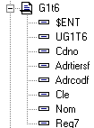

Xwin vous permet d'intégrer tous les champs d'une table A dans une table B.
Soit la table A avec les champs A1 A2 A3,
soit la table B avec les champs B1 B2 B3,
l'intégration de la table A après le champ B2 donne la table B avec les champs
B1
B2
A
A1
A2
A3
B3
Pour intégrer les champs d'une autre table, cliquez avec le bouton droit à l'endroit ou vous voulez faire l'insertion et sélectionnez le choix Insérer champs d'une table. Xwin vous propose ensuite la liste des tables du dictionnaire.
Visualisation
Une table insérée dans une autre est précédée du caractère $.
Exemple
Dans le dictionnaire GtFdd.dhsd, la table ENT est intégrée dans la table G1T6

En Diva, les champs suivants sont accessibles :
G1t6.Ent représente toute la « table » Ent
G1t6.Dos champ de Ent
G1t6.Ticod " " "
........ .........
G1t6.UG1T6 champ de G1t6
G1t6.CdNo " " "
........ .........
Remarques
Cette fonctionnalité est surtout utilisée pour une table mémoire associée à un objet tableau dans un masque. En effet, pour travailler avec un objet tableau, il faut avoir défini une table qui contient tous les champs qui sont affichés dans le tableau.
L'intégration des champs d'une table dans une autre table n'est possible que si aucun champ ne fait préalablement partie des deux tables.